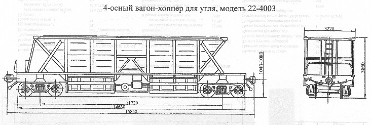

Назначение: для перевозки угля
Параметры
| Номер проекта | 4003.00.001-01 |
| Технические условия | ТУ 24-05-435-82 |
| Модель вагона | 22-4003 |
| Тип вагона | |
| Изготовитель | АО "Днепровагонмаш" |
| Грузоподъемность, т | 90 |
| Масса тары вагона, т | 29,5 |
| Нагрузка: статическая осевая, кН(тс) |
286,8(29,27) |
| погонная, кН/м(тс/м) | 73,9(7,54) |
| Объем кузова, м³ | 83 |
| Скорость конструкционная, км/ч: по магистральным путям в порожнем состоянии |
100 |
| по путям промышленных предприятий | 80 |
| База вагона, мм | 11720 |
| Длина, мм: по осям сцепления автосцепок |
15850 |
| по концевым балкам рамы | 14630 |
| Ширина максимальная, мм | 3270 |
| Высота от уровня верха головок рельсов максимальная, мм | 3860 |
| Количество осей, шт. | 4 |
| Модель 2-осной тележки | 18-477 |
| Наличие переходной площадки | нет |
| Наличие стояночного тормоза | нет |
| Количество разгрузочных люков, шт. | 4 |
| Размер разгрузочного люка в свету, мм | 3050х800 |
| Угол наклона, град. : стен бункеров |
45 |
| торцовых стен к горизонту | 55 |
| Количество бункеров, шт. | 4 |
| Число разгрузочных цилиндров, шт. | 2 |
| Необходимое давление воздуха в разгрузочной магистрали, МПа(атм.) | 0,5-0,6(5-6) |
| Год постановки на серийное производство | 1993 |
| Возможность установки буфера | нет |